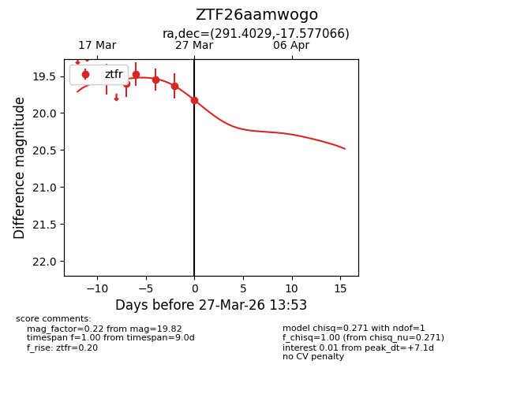
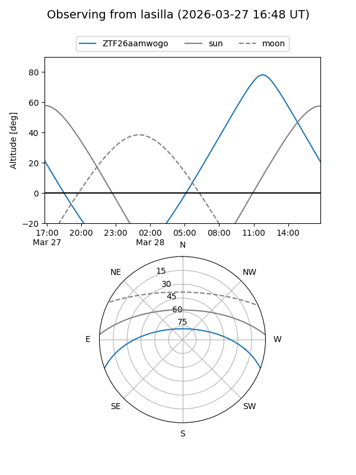
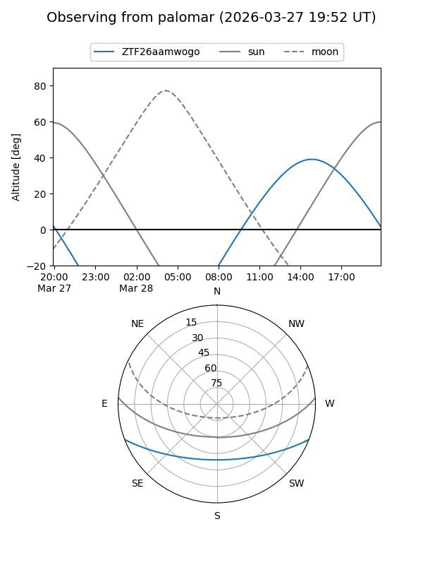
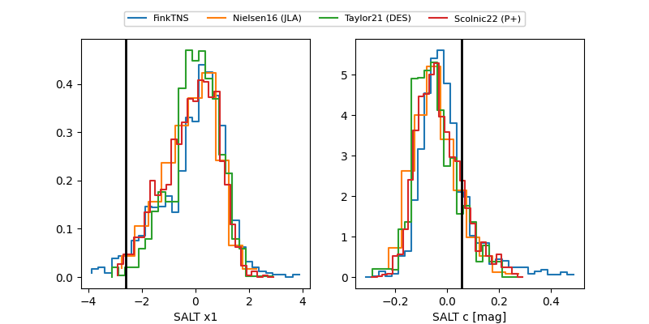

ZTF26aamwogo
Target ZTF26aamwogo at 2026-03-27 13:56
Aliases and brokers:
FINK: link
Lasair: link
ALeRCE: link
alt names
ZTF26aamwogo (ztf,fink_ztf)
Coordinates:
equatorial (ra, dec) = 291.4029,-17.57707
equatorial (HMS+DMS) = 19:25:36.69,-17:34:37.44
galactic (l, b) = (20.7109,-15.29233)
Flags:
Photometry:
last ztfr=19.82
6 ztfr detections
Lightcurve

Visibility


Additional plots
